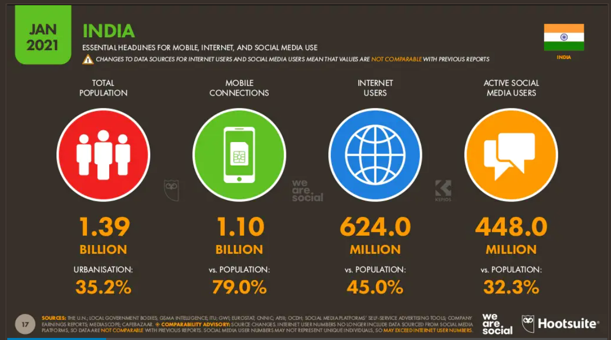
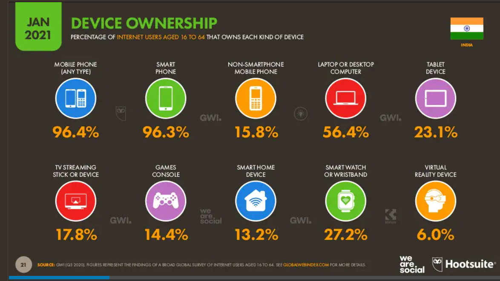
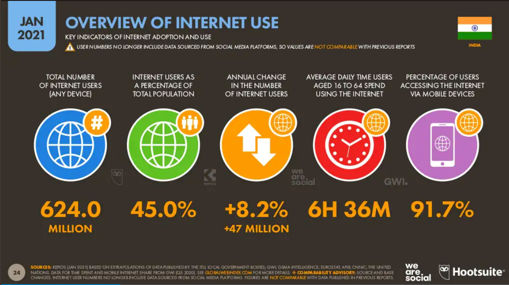
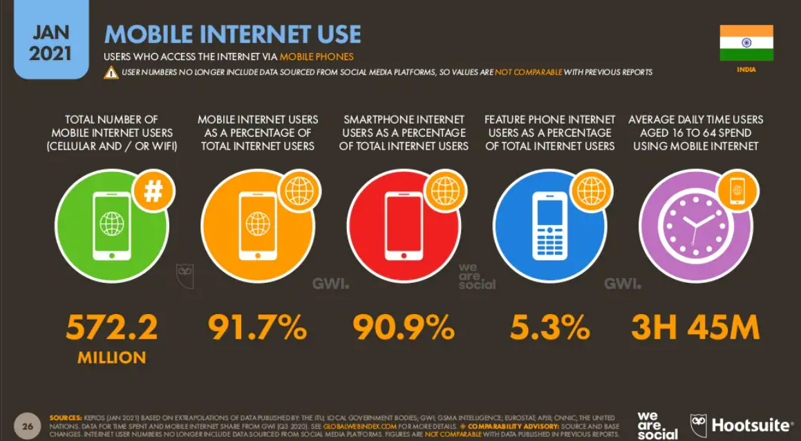
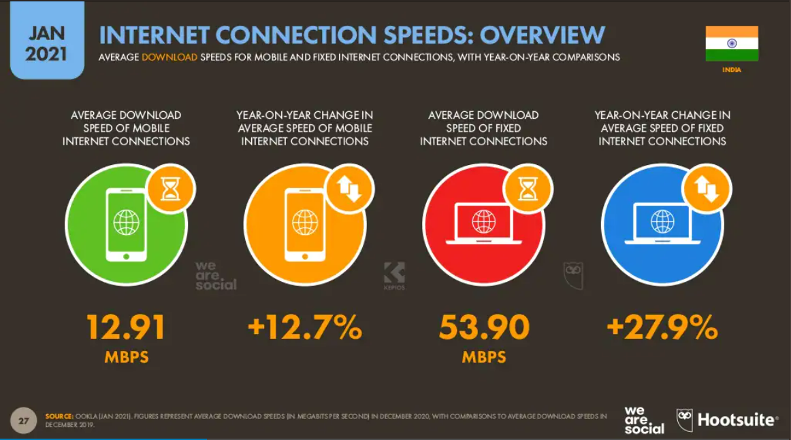
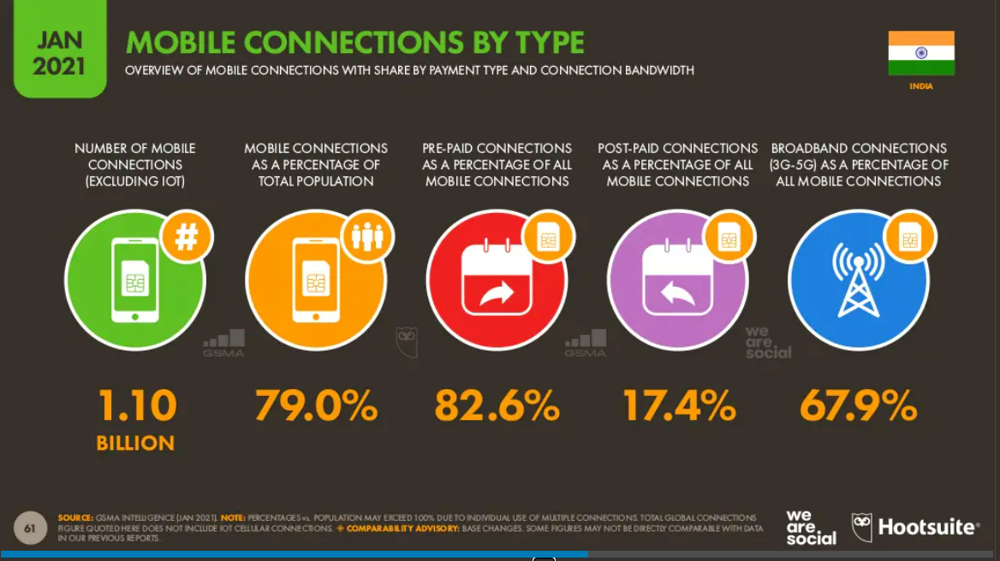
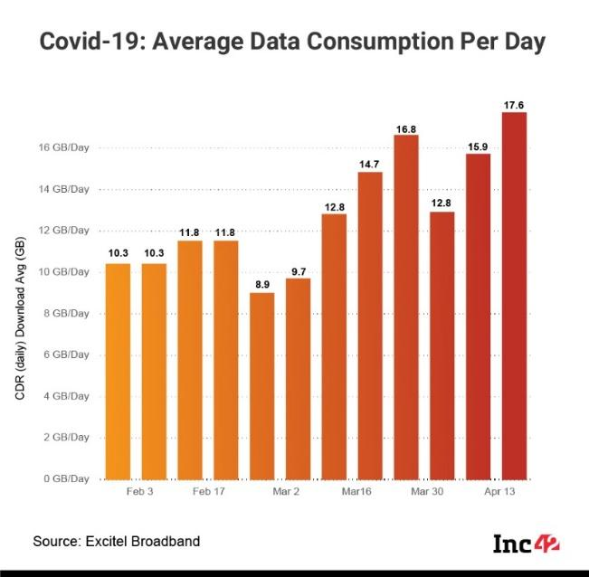

Abstract
The ongoing pandemic has severely challenged the digital divide in India. On one side, where the Digital Revolution has enabled a large segment of the population to be socially connected, to be able to study and work remotely, studies indicate that around 40% of the entire population still lack access to the required resources and thus, have significantly got impacted. The basic needs of internet connectivity and computer requirements in the current online mode of education have exacerbated the existing social-economic barriers for education in our country. Infrastructure in the school is one aspect but the basic knowledge of computers at home has become a non-starter for several families in the rural sector. In several remote areas, even the available hours of electricity have become a deterrent for online education.
This research paper has been undertaken to analyze the impact of COVID-19 primarily on the Education sector where millions of poor and rural children have been deprived of their fundamental rights to afford quality education. The paper emphasizes the government's role in developing suitable infrastructure and proposing various solutions that need to be effectively deployed by states for equitable access to education.
Recognizing that there has been a complete lack of preparation to handle the 10th and 12th board exams in 2021 that caused several months of delay, uncertainly, and finally, a compromise formula devised to allow students to be promoted based on past years' performance, a survey has been carried out at the national level to highlight interesting facts post-analysis for the extent of the macro impacts and the kind of challenges faced by different sections of the society. The paper delves deep into NSSO, UNESCO, and NCERT data and case studies which expose alarming factors like percentage dropouts and lack of basic technology apart from disruption in formal assessment mechanisms thereby following a quantitative and statistical approach of methodology.
The economic impact of this divide in education can have long-lasting effects on our growth trajectory which was just getting right in the last decade. Bridging this digital divide is of utmost essential not only sustaining the overall development of the economy but providing equal rights to education for all and adopting a uniform approach for preparing ourselves for the future. The paper touches on several initiatives being run by the government as well as the changes in our remote education model including teaching patterns, exercises as well as assessment methods. This will require massive participation from central, state bodies as well as teachers and students throughout the country.
Conclusively, the paper summarises the research and analysis with a most probable scenario of hybrid education in the future which will need to address both technology and human factors associated with learning and development. The role of government, as well as society, is equally important to bring this change at a systemic level along with required policies in effect to institutionalize the path forward and provide the fundamental right of education to every deserving child of our nation.
Keywords: COVID-19; Digital Divide; Education, Illiteracy, Information Technology, Economy.
Contents
- Motivation and Pursuit of Passion
-
Introduction
Objective
What is Digital Divide? -
Literature review/Background
Effects of Technology in Education
Caught in Digital Divide
The KEY Classification of Digital Divide
What are its implications -
COVID-19 and India
How COVID-19 deepens the digital education divide in India
Internet Users in India (Data and Statistics)
The Operational Burdens/Problems
The Digital Divide and Gender Bias
How India's digital divide is affecting alternative assessment mechanisms
Some case studies to illustrate the impact -
Second and Third Waves being Big Banes to this Crisis
Current Situations
Why is it Important to bridge the gap? -
Bridging the gap /Suggestions
Programmes for Addressing the Challenges in Bridging the Digital Divide
Initiatives taken by Government and other Countries - Digital Divide-Way Forward
-
Primary Research
National Survey
Inference and Analysis drawn out through National Survey 2021-22 - Conclusion
- Acknowledgement
- References
Motivation and Pursuit of Passion
I feel proud that I got an opportunity to conduct research on my area of interest: Economics. This act ignited my passion for the subject to a greater extent. This enabled me to deep dive into understanding numerous concepts, channelizing them, and presenting the output in an effective manner. I learned that research requires consistent hard work and dedication. I decided to inculcate my knowledge and principles of Economics into the area of research and this provided me immense confidence and awareness about the present world. I shared my experiences along with others through the platform of google forms and in a way realized my potential to address the problem through their opinions. I have also learned the fundamental principle of empathy, creative expression and my contribution to the betterment of the economy throughout this cherishing period of research.
Introduction
Objective
The ongoing COVID-19 pandemic has brought unprecedented challenges globally and in developing countries like India, these have a major impact on the social sectors like EDUCATION AND HEALTH.
The Digital Divide has grown to an enormous extent in the past few months since COVID-19 landed and it is a matter of high concern for all the people to eradicate the widened gap especially in the education domain.
The objective behind choosing this topic is to generate equality among the citizens in terms of education facilities and, awareness in the economy for provision of affordable and accessible technology for e-learning at every home in the country, especially for the vulnerable section of the society. Seeing a plethora of reports in newspapers made me curious to find out sustainable measures and opinions of the affected ones for India’s digital growth through a hybrid model!
Every child has the right to receive full proof education irrespective of his/her socioeconomic status and I believe:- Only a well-educated citizen can contribute productively to the economic growth of the country.
What Is the Digital Divide? 3)4)9)
4) Digital divide or the digital split is a term that refers to in the education sector to showcase inequalities in physical access to technology as well as the imbalances in resources and skills needed to effectively participate as a digital citizen.
It is the gap between demographics and regions that have access to modern information and communications technology, and those that don’t or have restricted access. These technologies include smartphone, television, personal computers, and the internet. Despite the developments made in technology, students are still not getting the benefits of it. They are not receiving the education that can help them survive in today’s tech-world. Other factors fuelling this gap are poverty and poor infrastructure, corruption, and bureaucracy as well as education and technical support. Therefore, it’s imperative for educators to be aware of the potential barriers to technology and internet access that students may face.
14) In this perspective, this study is focused to analyse the challenges faced by students when they are unable to cope with the learning technologies. This is important to understand the effect of COVID 19 and the influence of digital education among students. This study focuses to unravel the digital divide and following criteria included access to Internet facilities, electricity failures, and lack of possessions of laptops /smartphones /computers, both teachers and students lacking digital literacy skills.
Figure 1
Source: wiki.uiowa.edu
Literature Review/Background
Effects of Technology on Education
4) Technology has played a prominent role in the development of numerous industries and restructured many businesses today. Still, the impact of technology cannot be measured because it is still transforming the way we do everything. Just like every coin has got two sides, technology in the education industry has its own challenges.
Education is a fundamental human right and every child has the right to access full time education of satisfaction and equitable quality education. Educational system has been reforming in various aspects every now and them. The emergence of technologies also has changed the mode of imparting education in 21st century. The purpose of imparting education is evolved around three main components: knowledge, learning and innovation. System of imparting education is not as same as the ancient days. Educational structure and system varied from period to period. 14) [1]
The education industry is undergoing a transformation because of new technological breakthroughs. This resulted in affecting and impacting the way things are presented and taught in the classroom to the students. Today, it has become a vital ingredient to learning at all educational levels. However, a gap in access to the internet between rich and poor families is leading to dramatic disparities in educational success. This gap has come to be known as the ‘digital divide’. 4)
Figure 2
Source: english.alarabiya.net
13) (July 31, 2020). Digital divide in India. Civilsdaily-Digital India Initiatives. Digital divide in India – Civilsdaily.
4) What is the Digital Divide and how is it impacting the Education Sector? The Education Magazine- Enlightening the education landscape. What is the Digital Divide and how is it impacting the Education Sector? (theeducationmagazine.com).
9) (Byju's Exam Prep n.d.)Digital Divide in India-INITIATIVES | Byju’s | Digital Divide In India | Implications, Measures For India’s Digital Divide (byjus.com).
14) ResearchGate | https://www.researchgate.net/publication/352501594_digital_divide_in_school_education_among_indian_students_during_covid_19_pandemic_-a_qualitative_case_study_method.
Caught in the Digital Divide
4) Since rich people have the money to purchase, they get easy access to the latest technology and get the hold of the best available learning aids. As a result, they gain excellence in education while the poor stayed stuck to outdated old ideas to stagnate. Apart from this, students from poor neighbourhoods could not gain admission in schools that were adamantly embracing ICT; thus, they remained exclusively for the affluent in the society. For children in low-income school districts, inadequate access to technology can obstruct them from learning the tech skills that are crucial to success in today’s economy.
Figure 3
Source: officerspulse.com
The KEY Classification of Digital Divide 13)
Researchers have shown the relationships between technology use, students’ academic performances and students’ socio-economic. Because the ability to use technology at least partly depends on students’ socio-economic status, it is important to address the issue of socio-economic disparity, its relationship with technology use, and the impact of these two factors on academic performance.
Given the empirical and theoretical importance of these issues, the core research question of this issue is first and foremost- how does socio-economic status affect the availability of technology of students? Second, how does technology use affect students’ academic performance? Third, does the lack of technology use impair students’ academic performance? Additionally, later sections of this paper include a critical appraisal: Would students’ academic performance recursively impact the technology usage and socio-economic status?
[2]
Figure 4
13) Lawyers’ litigation forecasts play an integral role in the justice system (ed.gov).
What are its implications?
4) The massive digital divide gap in education means that it is a great hindrance to the development of the underdeveloped areas. The people living in underdeveloped areas are not capable of inventing or adopting new technologies aimed at promoting the living standards of the populations. The digital split not only impacts the future of young minds but also reduces the chance of having a great career. As a result, students from different backgrounds, geographies, communities, lose their chance to develop innovative solutions and be responsible citizens.
[3]
Figure 6
Source: www.weforum.org.
[4]
34) What is the Digital Divide and how is it impacting the Education Sector? The Education Magazine-Enlightening the education landscape. What is the Digital Divide and how is it impacting the Education Sector? (theeducationmagazine.com).
43) (July 31, 2020). Digital divide in India. Civils daily-Digital India Initiatives. Digital divide in India – Civils daily.
COVID-19 and India
How COVID-19 deepens the digital education divide in India 1)
- A total of 320 million learners in India which comprises a network of 1.5 million schools have been adversely affected by the COVID-19 pandemic and have transitioned to e-learning.
- An NSSO report highlights those 32 million children who were already out of school before the pandemic — the majority of them belonging to the socially disadvantaged class in the country.
- With huge regional and household disparities in access to the internet and technology, this transition has not been possible for all students and educators.
- The rapid shift to e-learning prompted by the pandemic has resurfaced long-standing issues of inequality and a digital divide in India that must be addressed by future economic, education and digitalization policies.
7) India has the world’s second-largest school system, after China. Shutting schools to maintain social distancing amidst the COVID-19 crisis was the most logical solution to avoid community transmission. However, this prolonged closure has a disproportionately negative impact on the most vulnerable students. The pandemic has not only caused the wide rift in educational inequality to balloon but also exacerbated existing disparities.
Besides the effect on short-term learning outcomes, extended school closures and inability of a large section of society to have access to remote education will result in a loss in human capital and diminished economic opportunities in the long run.
While the government endorses India as the flag-bearer of the digital revolution and acknowledges that it is a diverse and multilingual country, as supported by the recently drafted new education policy, e-learning platforms cannot replicate the various dialects, varied contexts and different lived experiences that are brought together by physical classrooms. If e-learning is the “new normal”, the policy must go further to address the feasibility of digitalization to ensure equity and quality in education. 7)
[5] Internet users in India
- There were 624.0 million internet users in India in January 2021.
- The number of internet users in India increased by 47 million (+8.2%) between 2020 and 2021.
- Internet penetration in India stood at 45.0% in January 2021.
Figure 7 8)
Figure 8 8)
51) Sushma Modi, Consultant, World Bank, Ronika Postaria, Student, University College London (Oct 5 2020). How COVID-19 deepens the digital education divide in India. World Economic Forum. How COVID-19 deepens the digital education divide in India | World Economic Forum (weforum.org).
7) Solutions To Close the Divide Base On van Dijk's Access Gaps Model. Weebly. Solutions for Digital Divide - The Great Digital Divide Project (weebly.com).
8) Simon Kemp (11 February 2021). Digital India:2021. Data Reportal. Digital in India: All the Statistics You Need in 2021 — Data Reportal – Global Digital Insights.
The operational burden/Problems
1) E-learning, as the name suggests, relies on the availability and accessibility of technology, but little or no availability of electricity is a significant challenge to taking advantage of education online. In a recent 2017-18 survey, the Ministry of Rural Development found that only 47% of Indian households receive more than 12 hours of electricity and more than 36% of schools in India operate without electricity. This suggests that while students from families with better means of living can easily bridge the transition to remote learning, students from underprivileged backgrounds are likely to succumb to inefficiency and a lack of adaptation, either because of the inaccessibility of the technology or the low education of their parents to guide them through tech-savvy applications.
Aside from the stresses of access and affordability, a daunting task for a student is to keep up with their studies and peers. Unlike an active classroom setting, e-learning does not accommodate one-to-one discussions or problem solving with tutors. Reports emphasize that the receivers (students) are not the only ones struggling – teachers are too. Teachers and institutions are not always trained and equipped to transition to online teaching. Many teachers are unqualified when it comes to using new technologies and interfaces. 1)
Figure 9 8)
Figure 10 8)
Figure 11 8)
Figure 12 8)
[6]
Figure 13 8)
Figure 14 8)
The digital divide and gender bias
1)3) NSSO 2014-2015 data suggests that economic factors are critical to children dropping out of school in India. The pandemic and lockdown have affected 1.4m migrant workers and others working in the unorganized sector (90% of India’s population is engaged in disorganized work). The migrant workers have either moved back home along with their children or are unable to send remittances home this season. In such a situation, the emphasis on technology-driven education is preventing many children in the country from continuing school education.
6) 8) Simon Kemp (11 February 2021). Digital India:2021. Data Reportal. Digital in India: All the Statistics You Need in 2021 — Data Reportal – Global Digital Insights.
According to the Key Indicators of Household Social Consumption on Education in India report, based on the 2017-18 NSSO, fewer than 15% of rural Indian households have internet access (as opposed to 42% urban Indian households). A mere 13% of people surveyed (aged above five) in rural areas — just 8.5% of females — could use the internet. Girls in vulnerable households face increased domestic duties inducing their inability to access online education either because of inadequate access to the internet and gadgets or because the male child and his teaching are prioritized. This silent exclusion of children belonging to families in distress may cause child labour and child marriage.
Economic reform policies have always leaned towards hyper-digitalization. For a long time, they have discussed how to innovate working and studying with at-home technologies. However, the implementation of these policies has not addressed the educational inequalities that have today emerged as a crisis in the caste and class struggle in India.
Figure 15
Figure 16
[7]
71) Sushma Modi, Consultant, World Bank, Ronika Postaria, Student, University College London (Oct 5 2020). How COVID-19 deepens the digital education divide in India. World Economic Forum. How COVID-19 deepens the digital education divide in India | World Economic Forum (weforum.org).
How India's digital divide is affecting alternative assessment mechanisms
Recently, the PM of India endorsed the decision of CISCE cancelling class XII Board exams in view of the safety and anxiety concerns among parents, students and teachers amid the second wave of pandemic. 5)
In the backdrop of the National Education Policy 2020 (NEP 2020), institutions will face immense challenges to maintain an objective assessment in designing MCQs on critical thinking or problem-solving skills, citizenship skills or self-directed inquiry methods, collaborative social skills, and in monitoring formative assessment. Learning management systems, types of project-based assessment and online proctored exams need sound digital infrastructure and stable internet connectivity. Alternative assessments manifesting a uniform and reliable evidence of learning outcomes is a serious challenge in such conditions.
The All-India Federation of University and College Teachers' organisation (AI- FUCTO) has expressed its reservation on the UGC draft notification of May 20 related to the blended mode of teaching and learning as this will ultimately dismantle the constitutional provisions of equity, quality, access and inclusiveness. The resolution objects to the proposal for increasing the quantity of online digital modes of pedagogic processes on the ground of lack of interactivity.
The Supreme Court of India on June 17th 2021 gave in-principal clearance to the schemes placed on record by the CBSE and ICSE to assess the final marks of Class 12 students whose Board exams were cancelled due to the COVID-19 pandemic. This is the first time Class 12 students will be assessed on the basis of their performance in Class X and XI apart from their internal tests in Class 12th and actuals from the practical’s held earlier. While this formula takes care of feedback from a 13-member committee; there is a large section of the students especially meritorious and those who did not take their Class XI seriously who will get impacted. Students who are not satisfied with the results will have an option to appear for the physical test which is likely to be conducted later in the year once pandemic situation is in control. 5)
The CBSE has decided to conduct board examinations in two parts for 2022 mechanism. One will have an objective assessment of 1 hour in November 2021 and the other will be subjective for 2 hours of duration in March 2022. The strategy has been formulised to conduct CUCET exam for 50% weightage consideration in college admissions.
[8] Some case studies to illustrate the impact 14)
- Kishan Ram is a daily wage labourer from Tipalkot village of Karnataka. He has three daughters who are all school going students. He has stated “Since the imposition of lockdown I have not gotten steady work or income. I have requested my neighbour to permit to his smartphone so that his daughters can continue studying, but it mostly depends on his will and availability of network in our village”. These students dwell in coastal districts and suffer due to poor internet connection (Tandon, Tulika:2020). Manalodai village is located on Pachamalai hill, Tiruchy where school going student trek 1km every day to access Internet and join their online classes. “They have to reach a one particular cave-like spot on the top of the hill because that is the only place, they access the Internet and join their online classes” stated by the New Indian Express.
- A 13-year-old schoolboy from Chennai studies in a corporation school indulged in a theft act of stealing the mobile phone from a truck driver so that he can attend his online classes. He hails from a poor socio-economic background as his father works at a biscuit shop and his mother is a domestic worker. He was caught along with other two boys by the crime police inspector of Thiruvottiyur Ms S Bhuvaneswari. Hearing the boy story, instead of penalising him the inspector got him a new smartphone so that he will continue his studies and turn him a positive future (Kannan, Sindhu, 2020).
- Similar incidents from Theni district in Tamil Nadu where a class 11 student hanged himself when his parents were out for work because he was stressful to follow the online classes and scared of not being able to fulfil his parents’ wish of scoring well, the student hung himself (Nath, Akshya,2020) … and many more!!!
85) Jain Mahima. (20 May 2021). Why India's digital divide hampering vaccine access. Devex. Why India's digital divide is hampering vaccine access | Devex.
14) ResearchGate | https://www.researchgate.net/publication/352501594_digital_divide_in_school_education_among_indian_students_during_covid_19_pandemic_-a_qualitative_case_study_method.
Second and Third Waves being Big Banes to this Crisis
Current Situations
The COVID-19 outbreak that led to the closure of schools has had an unprecedented effect on children’s education and wellbeing. It is important to note that interrupting education services can have serious, long-term consequences for economies and societies, such as an increase in inequality, poorer health and nutrition outcomes, and reduced social cohesion.
The impact of these unprecedented times can be different on different age groups. The impact on children from deprived, disadvantaged, or vulnerable sections can be expected to be far more adverse than on children from privileged backgrounds. A recent study of UNICEF (2020) highlights that almost 1.2 billion schoolchildren are affected by the closures of schools as they contend with the realities of remote learning in the midst of the pandemic, and this has raised concerns about a global learning crisis. Further, as a result of school closure across the world, as many as 369 million children are missing out on their daily meals provided by school, and many of these children depend on the school meal as their everyday source of nutrition. Other than this, a study by UNICEF (2020) shows that ‘… prolonged closures disrupt essential school-based services such as immunization, school feeding, mental health, and psychosocial support, and can cause stress and anxiety due to the loss of peer interaction and disrupted routines.’
A study of NCERT (2021) reflects that approximately 27% of the students do not have access to smartphones/laptops to attend classes in a virtual world. Swabhiman (2021) in, ‘Digital Education in India: Will students with disability miss the bus’ found that almost 43 lakh disabled students across states may drop out due to the inability to cope with online education. Seasonal migration, poverty, lack of access to and awareness of social protection measures also lead to children dropping out of school (UNICEF, 2020). Recent OXFAM study (2021) highlights that, the dominant mode of online education delivery is WhatsApp followed by phone calls between teachers and students. Further, half of the teachers still faced problems related to expensive data and slow internet and almost 84% teachers reported facing challenges in delivering virtual mode of education.
A recent study of UNESCO (2020) highlights that ‘In India, an estimated 71 million children aged between 5-11 years access the Internet on devices of their family members, constituting about 14 % of the country’s active Internet user base of over 500 million. Two-thirds of internet users in India are in the age group of 12-29 years (data shared by the Internet & Mobile Association of India). [9]
Data and statistics have highlighted that post lockdown, the internet has amplified the risk of cyber-bullying, including online discrimination for children and young people. ‘It is important to note that, while providing online learning to learners, providing them safe access to the internet is imperative as they may come across risks, such as online sexual abuse, cyber-bullying and potentially harmful content and children’s privacy may also be at greater risk.’ (UNICEF, 2020)
Why is it important to bridge this gap? 4)
Now, the question arises is why is it so important to bridge this gap. By closing this gap, there will be a positive impact on countries and people. Through the use of the internet and technology, students will be able to create a significant difference in a community by learning new ways to tackle the issues, working together to achieve a common goal, thinking creatively to develop solutions to complex problems, and finally, making the world a better place for living. The upcoming generation of students will experience better learning as they can better access and use various learning tools available on the internet. This, in turn, will diminish the gap between the rich and the poor. Also, the poor will be able to learn better ways to empower themselves. Lastly, it will improve digital literacy capacities all over the world.
96) (Sibal 2022)Carmen Steele (Nov 16, 2018). Top Five Digital Divide Solutions. Digital Divide Council. Top Five Digital Divide Solutions | Digital Divide Council.
11) Sibal Kapil (17 January 2022), Hindustan Times, Ranchi. Covid-19-The perils of the digital divide. Pressreader. PressReader.com - Digital Newspaper & Magazine Subscriptions.
Bridging the Gaps/ suggestions 3)4)6)
Digital Divide has become a hot topic for discussion for today’s leaders now. It has become necessary for these leaders to provide such solutions that can address this gap. It doesn’t matter from where the solutions come, what matters most is it should conquer the mountains of obstacles that exist today. In the end, all that matters is that the digital gap should be closed for development of people and countries. Following are the ways that can lessen the impact of the digital split in the education sector:
Figure 17
Programmes for Addressing the Challenges in Bridging the Digital Divide: 3)
- The Indian government has passed Information Technology Act, 2000 to make to e- commerce and e-governance a success story in India along with national e-governance plan.
- Optical Fibre Network (NOF-N), a project aimed to ensure broadband connectivity to over two lakh (200,000) gram panchayats of India by 2016.
- Digital Mobile Library: In order to bridge the digital divide in a larger way the government of India, in collaboration with the Centre for Advanced Computing (C–DAC) based in Pune.
- Unnati, is a project of Hindustan Petroleum Corporation Limited (HPCL) which strives to bridge the digital divide in schools by giving the rural students with poor economic and social background access to computer education.
- E-path Shala: To avail study materials for every rural and urban student.
- Common Service Centres: Which enabled the digital reach to unreachable areas.
- SAME (Satellite and Advanced Multimedia Education): This satellite-based education initiative focuses on providing high quality education to all schools, including urban and rural in Karnataka (India). Schools are using SAME as a means to bring in educational expertise in the forms of expert teachers and content developers via the Indian Institute of Management (IMM). This consists of students receiving lessons created by expert teachers using high quality and reliable satellite and multimedia technology.
The initiative taken by Governments and Countries 3)
Governments of different economics have taken many initiatives to address the challenges of the digital divide. The Indian government launched Digital India Campaign on 1st July 2015 to increase internet connectivity in rural areas and make the country digitally empowered in the field of technology. Digital India Mission was launched by PM Narendra Modi as a beneficiary to other government schemes including Make in India, Bharatmala, Sagarmala, Startup India, BharatNet, and Standup India.
Asserting the Centre's push for digital education, finance minister Nirmala Sitharaman on Tuesday announced several initiatives aimed at promoting online learning and training in the country. A digital university, 750 virtual labs to enhance thinking skills in science and mathematics and expansion of the "One Class, One TV Channel" programme under the PM e-VIDYA scheme from the present 12 TV channels to 200 are among the initiatives that will be implemented in the coming year, as mentioned in the Union budget 2022-23.
The US government has created programs like The Community Technology Center’s program and The Neighboorhood Networks Program.
Digital Divide-Way Forward!
-
India needs to explore new ways to expand information infrastructure, increase access by improving markets, and reduce the cost of service, especially for Internet access. 4)
- The promotion of indigenous Information and Communication Technologies development under Atmanirbhar Abhiyan can play a significant role. 9)
- Promotion of budget mobile phones is the key; we should explore migration to new technologies like 5G with efficient spectrum allocation and healthy competition between service providers to make the services affordable. 9)
- Governments can look at extending tariff subsidies to encourage vulnerable sections of the society to afford and buy digital tools. For example, free Wi-Fi Access points for home optical fibre connectivity will increase early adoption. 9)
- [10] Government should incentivise service provides to enhance rural network coverage and accessibility. Large-scale cost-effective solutions that are suited for rural environments should use satellite broadband technologies, drones, and earth-orbiting balloons. E.g.: Kenya is also trying to improve its network coverage by introducing Google’s ‘Loon Balloons’. These ‘Balloons’ float in the airspace carrying 4G base stations. 9)
- Ease of use is a key criterion for adoption of new technologies such as remote learning software and study material / assessment techniques. 9)
-
Promoting digital literacy through campaigns or incentives 4)
Digital literacy needs special attention at the school/college level. The National Digital Literacy Mission should focus on introducing digital literacy at the primary school level in all government schools for basic content and in higher classes and colleges for advanced content. Higher digital literacy will also increase the adoption of computer hardware across the country. Furthermore, when these students will educate their family members, it will create multiplier effects.
Seeing the importance of digital literacy, the Supreme Court of India has declared the right to access to the Internet as a fundamental right, making it a part of the right to privacy and the right to education that comes under Article 21 of the Constitution.
-
Assigning free gadgets to rural students in India 2)
We should imbibe best practices from US where efforts to reach connectivity to students are on. Chicago’s public have schools provided students with personal gadgets to keep them abreast of their education timelines. In Coachella Valley, California, the students were not only given personal devices but were also provided with seamless Internet hotspots in their neighbourhoods resulting in positive impacts. India can harness this opportunity by manufacturing digital equipment that can be used for education services as it serves the twin purpose of indigenous manufacturing and bridging the digital divide. Internet services in India, too, are amongst the cheapest in the world; hence, the overall cost of ownership can be brought down. Given the push for digital literacy, both manufacturing and service provision can lead to a meaningful change in this e-education space. 10)
-
Learnings from other countries can be useful and similar initiatives can be taken up depending on state capacity and collaboration with private service providers.
10) World Bank web page provides insights on how other economies are undertaking initiatives to make virtual schooling feasible. Jamaica, Argentina, and South Africa have introduced zero-rated educational websites. Zero-rating is a practice that allows consumers to use a website without any financial cost. Jamaica and Argentina also distributed learning kits to students who don’t have access to Internet connections and partnered up with Internet service providers to subsidise Internet plans and make learning on digital platforms affordable.
-
Providing alternative solutions: 9)
TRAI should consider putting in place a credible system. This system will track call drops, weak signals, and outages. It ensures the quality and reliability of telecom services.
Cyber Security: MeitY will need to evolve a comprehensive cyber-security framework for data security, safe digital transactions, and complaint redressal.
Telecom ombudsman: The government should appoint officials and also set up a telecom ombudsman for the grievance redressal.
Forming partnerships with successful entities and robust networking – Sharing of infrastructure, seamless point of inter-connects and collaboration for number portability and roaming are few examples.
-
Empowering users 6)
To see the full potential of the internet and its impact on the world, we must take advantage of its capabilities. Most of the people who use the internet have a limited understanding of some of its use cases. For instance, Google helps people find information that they would not have access to. An issue that broadens the digital divide is ‘participation inequality’ where users lack the skills to use it.
Since user data is used in decision-making, the data collected may not be suitable enough for proper decision making hence leading to poor decisions that may lead to huge consequences. To avoid this, the public needs to be educated on the benefits and value of utilizing the internet and the various resources within it to achieve economic and social growth. Furthermore, the public should be encouraged to share opinions and any other relevant user data online to aid the government and other organizations make informed decisions that serve the people’s needs better. 6)
-
Improve the relevance of online content and regulation. 6)
According to research, the top barrier to internet penetration in developing countries is relevance. To encourage internet adoption in such places, local content and applications need to be developed in local languages that can be understood by the local populace. Besides to this, privacy, trust, and data security issues that tend to scare away many potential users need to be addressed by formulating policy frameworks that ensure online websites protect their users’ data and online activity.
-
How teachers and parents can help at their level 7)
- Low-Cost Access: Some non-profit organizations are working with telecommunication providers to make Internet connectivity affordable for families who qualify for free- and reduced-price school lunch programs. EveryoneOn helps families secure low-cost access and devices through the Connect2Compete program. This organization, active in 49 states, has as its mission "to eliminate the digital divide by making high-speed, low-cost Internet service and computers and free digital literacy courses accessible to all unconnected Americans."
- Adjusting resources and assignments: Students in rural areas are less likely to have broadband access than those living in more urban areas. Teachers can then interact with these individuals accordingly to make sure they are not sending them home with assignments and devices they can’t use or complete. They can then take special precautions to make sure these students can keep up with their coursework.
- Work with the Community: Students and their families may not be aware that many community organizations offer free Internet access. Showing teachers how the use of technology made teaching more interesting and easier helped motivate teachers to engage with ICT. Institutions should have technical support in place. Without the required support in place teachers showed a lack of motivation.
-
Offering wireless access in study halls, the cafeteria, and the library throughout the year.
Example of WIFI Partnership: 4)
The Clark County School District have been creative by partnering with the Las Vegas Chamber of Commerce to establish wifi partners and create a free wifi directory for students. This enables students to access wifi outside of school and opens up learning for ‘anywhere, anytime’. 10) [11]
102) Parsheera Smriti (17 October 2019). India's on a digital sprint that is leaving millions behind. BBC. India's on a digital sprint that is leaving millions behind - BBC News.
4) What is the Digital Divide and how is it impacting the Education Sector? The Education Magazine-Enlightening the education landscape. What is the Digital Divide and how is it impacting the Education Sector? (theeducationmagazine.com).
9) (Byju's Exam Prep n.d.) Digital Divide in India-INITIATIVES. Byju's. Digital Divide In India | Implications, Measures For India’s Digital Divide (byjus.com).
Primary research
National Survey
NOTE: Find the link attached to the National Survey conducted by me:
https://docs.google.com/forms/d/e/1FAIpQLSficQwp90tWQFCQIULA8Mb4bU-CSqVBMkGl5Yn0VqQQ_vSFJA/viewform?usp=sf_link
for which I received 300+ responses especially from RURAL STUDENTS to analyze the trends in accessing internet in August 2020.
Inference and Analysis drawn out of the national survey 2021/22
Figure 18
We targeted majority of the females in order to encourage them to open up about their experiences.
Figure 19
We can interpret that the majority of families have income less than 1 lakh which results in non-availability and unaffordability of proper bandwidth at their homes.
Figure 20
Almost 60% of students don’t have their personal gadgets resulting in lesser participation in online classes.
Figure 21
The rural and urban economy have almost equal shares in this illustration.
Figure 22
Many rural counterparts don't have good internet access and this deprives them of poor performance in exams.
Figure 23
Today, many girls in the villages are still deprived of education amd are given household chore.
Figure 24
Many students have landed in anxiety and stress due to e learning and many have reported the reason as deprived of fun and social activity compared to offline mode.
Figure 25
A lot of students have not been able to concentrate in class due to poor infrastructure or lack of awareness resulting in low performance and depression while 43 % have met their expectation amidst unprecedented circumstances.
Hybrid mode of education has started being implemented by the education ministers and government for both social and scholastic skill enhancement.
1110) Kaur Sampreet, Jain Ayushi (June 19, 2020). How to bridge the digital divide in education. The Hindu Business Line. How to bridge the digital divide in education - The Hindu Business Line.
Conclusion: Is Complete Digitalization Fruitful for the Economy? 3) 11)
Technology has become an integral part of living in the 21st century and has given birth to numerous challenges and opportunities. The need for adoption of remote learning using advanced communication and collaboration technologies cannot be stressed more than in ongoing pandemic situation. Therefore, it is important for students to get familiar with the internet and technology. This will aid them in addressing the challenges of the world and making their future better. The focus of today’s leaders should be on eliminating barriers that impact both students and teachers and their instructional practices. Providing and enabling additional economic support for availing the ICTs to unprivileged and marginalised students is the need at this hour. It is important that systematic intervention is essential to mitigate the gap of learners’ access to ICTs. Also, governments around the world have a duty to address these barriers and bridge the digital divide.
3) The scope of e-learning is enormous and can help realize the potential of each student. There lie both opportunities and challenges for the government and the private sector. The aim should be to ensure equal and adequate access to such platforms as the country continues to globalize and catch up with advanced economies. Therefore, the need to promote and safeguard every child’s right to education as set out in the Convention on the Rights of the Child (1989) and the Right of Children to Free and Compulsory Education Act (RTE) should be given the utmost priority.
If the Indian education system aims to transit to online learning in the future, it must emphasize policies that bridge the digital divide and move the country closer to achieving the Sustainable Development Goals. 11)
However, overreliance on technology and online programmes can be both unreliable and unproductive- thus efficient use can be a positive approach.
I STRONGLY BELIEVE that A HYBRID MODE OF LEARNING CAN RESULT IN EFFECIENCY AND PRODUCTIVITY IN THE EDUCATION SECTOR especially in the 21st Century!
11) This is because Knowledge, not many social skills, can be acquired only digitally. For e.g.- experiments in the lab are needed for physics and chemistry. We just can’t produce engineers or doctors with theoretical knowledge of machines and surgeries. We need those who can design and operate machines and who can perform successful operations through their skills. Hence, it is really important for the economy to keep in mind that knowledge can be delivered and learned but skills need experimentation and practice, which cannot emerge on online platforms. Further, if we completely rely on online education for our degrees, graduates without skills can not only impact their lives but also impact employability on an aggregate level which can foster economic growth of our country!
Therefore, according to me Online learning can never be a substitute unless advanced technology pops up and is implemented for equity-learning. While online learning can’t be discarded altogether, its benefits can be availed within the environment of classrooms where students can blossom and discover themselves. [12]
Further research and experimentation is the need of the hour to bridge the digital divide for the long term.
Acknowledgement
Every student’s project owns debt their teachers, friends and their parents. I gratefully acknowledge my indebtedness to all of these for helping me to complete my first research paper The work would not have been possible to come to the present shape without the able guidance, support and motivation by number of people. With deep sense of gratitude, I am thankful to DR Rajesh Srivastava (Professor of Marketing, Middle State University, Tennessee, USA) for mentoring me. I am also thankful to my parents and friends for their constant support and motivation that helped me a lot directly or indirectly.
References
- Sushma Modi, Consultant, World Bank, Ronika Postaria, Student, University College London (Oct 5 2020). How COVID-19 deepens the digital education divide in India. World Economic Forum. How COVID-19 deepens the digital education divide in India | World Economic Forum (weforum.org).
- Parsheera Smriti (17 October 2019). India's on a digital sprint that is leaving millions behind. BBC. India's on a digital sprint that is leaving millions behind - BBC News.
- (July 31, 2020). Digital divide in India. Civilsdaily-Digital India Initiatives. Digital divide in India – Civilsdaily.
- What is the Digital Divide and how is it impacting the Education Sector? The Education Magazine- Enlightening the education landscape. What is the Digital Divide and how is it impacting the Education Sector? (theeducationmagazine.com).
- Jain Mahima. (20 May 2021). Why India's digital divide hampering vaccine access. Devex. Why India's digital divide is hampering vaccine access | Devex.
- (Sibal 2022)Carmen Steele (Nov 16, 2018). Top Five Digital Divide Solutions. Digital Divide Council. Top Five Digital Divide Solutions | Digital Divide Council.
- Solutions To Close the Divide Base On van Dijk's Access Gaps Model. Weebly. Solutions for Digital Divide - The Great Digital Divide Project (weebly.com).
- Simon Kemp (11 February 2021). Digital India:2021. Data Reportal. Digital in India: All the Statistics You Need in 2021 — Data Reportal – Global Digital Insights.
- (Byju's Exam Prep n.d.)Digital Divide in India-INITIATIVES | Byju’s | Digital Divide In India | Implications, Measures For India’s Digital Divide (byjus.com).
- Kaur Sampreet, Jain Ayushi (June 19, 2020). How to bridge the digital divide in education. The Hindu Business Line. How to bridge the digital divide in education - The Hindu Business Line.
- Sibal Kapil (17 January 2022), Hindustan Times, Ranchi. Covid-19-The perils of the digital divide. Pressreader. PressReader.com - Digital Newspaper & Magazine Subscriptions.
- (PDF) The Digital Divide in Education (researchgate.net).
- Lawyers’ litigation forecasts play an integral role in the justice system (ed.gov).
- ResearchGate | https://www.researchgate.net/publication/352501594_digital_divide_in_school_education_among_indian_students_during_covid_19_pandemic_-a_qualitative_case_study_method.
- The digital divide and is it holding back women in India? - Hindustan Times.
- Bridge that digital teaching divide (indiatimes.com).